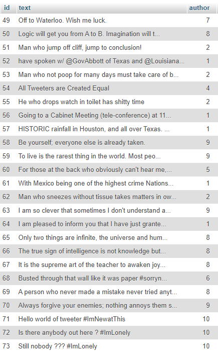
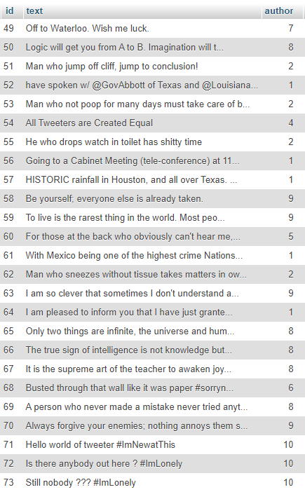

One of my first project was BOXCINEMA where I had to make a website with HTML, CSS and PHP languages. The goal is to look like the "Allo Ciné" site and generate in PHP a search bar, member spaces and connection with dynamic film pages from the data of a database.


This project changes a bit from the others, we were able to modify a pixelated image and change its color and the positioning of pixels thanks to the Javascript language. As you can see here with the basic rabbit on a green background that ends up with a galaxy background image.

IMC is one of the first mobile applications, programmed in Angular and Ionic. We had to create forms, titles and make an algorithm to know the IMC from weight and height.


Arriving in the 3rd year, we started with a reproduction of a site model. The goal is to use the following CSS tools: SASS, GRID and Flexibles. This responsive and adaptable site with all screens is made in HTML CSS SASS.


 

Twitter App is a web application that takes the role of twitter which means : post a tweet, view it, see the list of tweets and users or just one in particular. This application uses a phpMyAdmin database and works with PHP, Eloquent and MVC method (Model, View, Controller).


Trattoria is a restaurant located in Nancy. We essentially produced the design of the project by studying the different constraints and creating diagrams such as Use Case, UML, activity or a User Story Mapping.


Media Photo was the first real project where we had to create a web-based gallery management application a bit like Pinterest. Whether it is the design, organization, integration, or programming from A to Z we as a team were able to produce the entire mission.


This task in Interoperability taught us to retrieve open data in XML or JSON and to integrate it in a Map in Javascript. First, we used XML/ XSLT to produce an HTML/CSS rendering and then we learned how to use PHP. The data came from the official website of the city of Nancy (Weather, Air Quality, Works, Bike Station, etc.).


WARNING! Following projects are still ongoing and not completed.
The Battle is a mobile app created with Android Studio, Flutter and Dart. The goal is to display a list of monsters and select them to create teams. There is also a data sheet for each character.


CO'OP is an application programmed partly in VueJS. It contains components and views with a connection part and forms to add messages and buttons to delete users and messages.


Finally Racing Maze is the biggest of the projects. This is a tutored project which consists of producing in NodeJS, Javascript, HTML/CSS and Socket.io a web game application. The goal of the game is to be able to play online with users in a maze, to finish first by retrieving all the coffers and avoiding monsters, to see the progress of the players and its ranking at the end of the game. All of it was made from A to Z in a team of 5 whether it was design, model, graphical interface or programming.